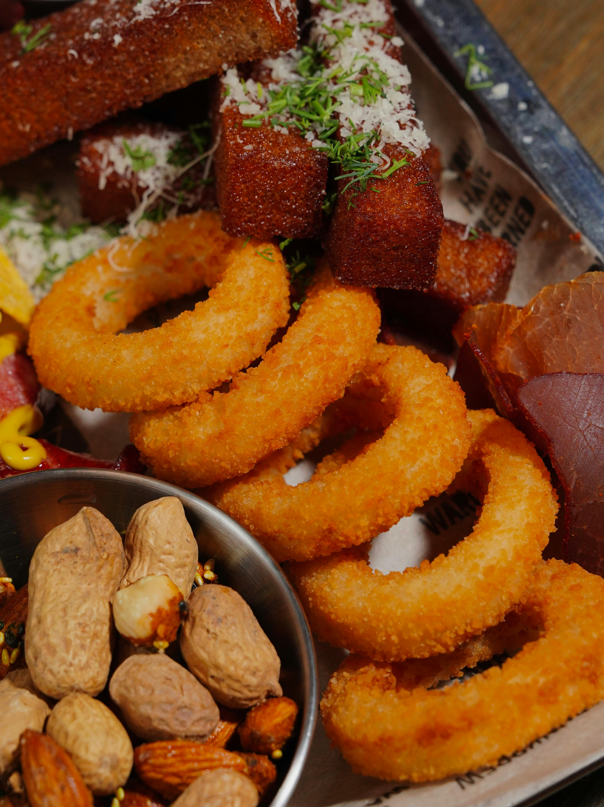

Onion Rings

Description
This recipe for onion rings is so easy and amazingly crispy.
You can now make up for all those years of deep-fried denial by cooking these at home.
Ingredients
- 2 cups vegetable oil for frying
- ½ cup all-purpose flour
- ¼ cup cornstarch
- 2 tablespoons dry potato flakes
- ⅛ teaspoon cayenne pepper, or to taste
- 1 cup chilled club soda
- 2 cups panko bread crumbs, or as needed
- 2 large onions, cut into 1/4-inch thick slices and separated into rings
- fine salt to taste
How can i cook it ?
- Step 1
- Heat oil in a deep fryer or large saucepan to 350 degrees F (175 degrees C).
- Step 2
- Whisk together flour, cornstarch, potato flakes, and cayenne pepper in a large bowl. Whisk in club soda to make a smooth batter. Place bread crumbs in a shallow pan.
- Step 3
- Working in batches, dip onion rings into batter, then press in bread crumbs to coat.
- Step 4
- Cook coated onion rings, a few at a time, in hot oil until golden brown, 2 to 3 minutes. Transfer to a cooling rack set over paper towels to drain.
- Step 5
- Season with fine salt and serve hot.